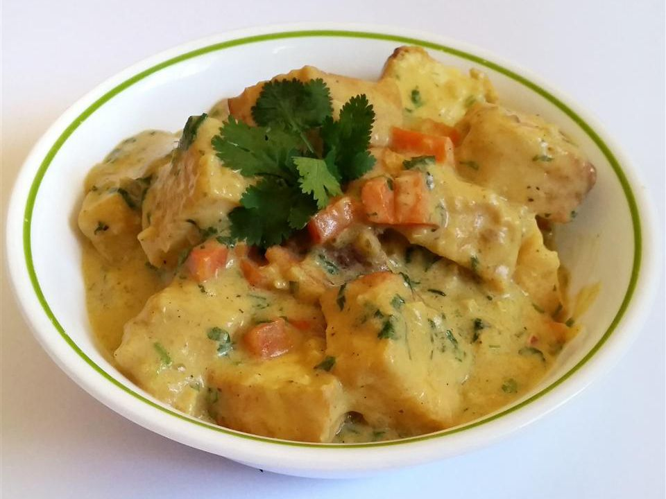

Thai Curry with Tofu

Description
Curried tofu is my favorite dish. This dish includes tofu, cilantro, and onion giving it delicious dimension and
flavor.
Ingredients
- 1 tablespoon canola oil
- 1 (12 ounce) package extra-firm tofu, drained and cubed
- 1 tablespoon seasoned salt, or to taste
- 1 tablespoon butter
- 1 small onion, chopped
- 3 cloves garlic, minced
- 1 (10 ounce) can coconut milk
- 2 teaspons curry powder
- 1/2 teaspoon salt
- 1/4 teaspoon ground black pepper
- 1/4 cup chopped fresh cilantro
Steps
- Heat oil in a large skillet over medium-high heat. Add tofu cubes, season with seasoned salt and fry until
golden on all sides, stirring occasionally, about 15 minutes. Remove to paper towels, and set aside.
- Melt butter or margarine in the same skillet over medium heat. Add the onion and garlic; cook and stir until
tender. Stir in coconut milk, curry powder, salt, pepper and cilantro. Return the tofu to the skillet.
Simmer over low heat for 15 minutes, stirring occasionally.